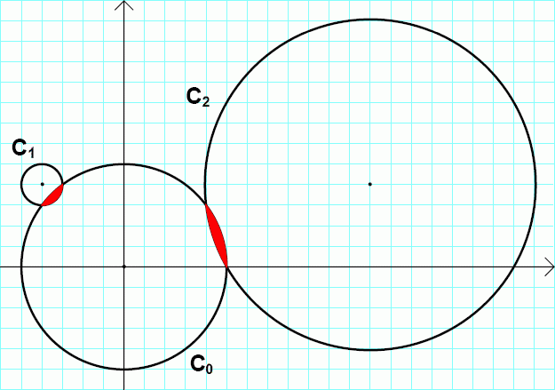

We call the convex area enclosed by two circles a lenticular hole if:
Consider the circles:
$C_0$: $x^2 + y^2 = 25$
$C_1$: $(x + 4)^2 + (y - 4)^2 = 1$
$C_2$: $(x - 12)^2 + (y - 4)^2 = 65$
The circles $C_0$, $C_1$ and $C_2$ are drawn in the picture below.

$C_0$ and $C_1$ form a lenticular hole, as well as $C_0$ and $C_2$.
We call an ordered pair of positive real numbers $(r_1, r_2)$ a lenticular pair if there exist two circles with radii $r_1$ and $r_2$ that form a lenticular hole. We can verify that $(1, 5)$ and $(5, \sqrt{65})$ are the lenticular pairs of the example above.
Let $L(N)$ be the number of distinct lenticular pairs $(r_1, r_2)$ for which $0 \lt r_1 \le r_2 \le N$.
We can verify that $L(10) = 30$ and $L(100) = 3442$.
Find $L(100\,000)$.
solve(max_limit=10) → ?solve(max_limit=100000) → ?solve(max_limit=200000) → ?